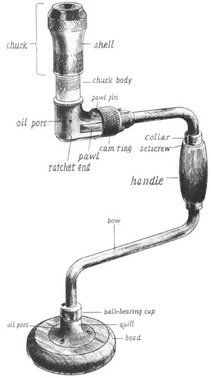
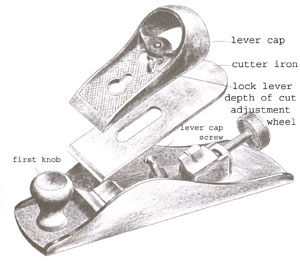
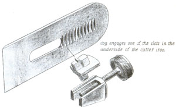
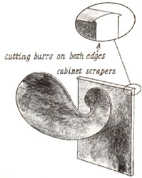
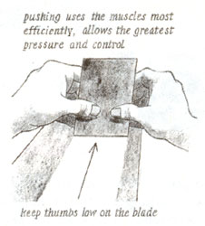
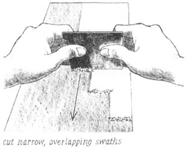

Country Skills
Rekindle an age of cheap, efficient woodworking tools in your home.
The average construction site is full of hard-working men and women sweating over their craft while attached like marionettes to the electrical grid. You'll see them waving thousands of dollars worth of candy-col ored power tools over their work, while trailing miles of copper gossamer back to the nearest generating station. Ask one of them to drill an oak plank two inches beyond the reach of their longest extension cord, however, and they become as productive as a three-year-old bruising grass with a toy mower. Those that quick-draw a battery-powered tool in response to such a challenge will lose their snugness after the tenth or eleventh hole.
We seem to have forgotten what some of history's best craftspeople had no choice but to understand: The right hand tool, with a generous application of human muscle and skill, does the job quickly and well. A hand tool is on intimate terms with the material it works in ways that a shrieking, woodshredding, finger-risking power tool cannot approach. Despite the trend toward "more power," a hand tool is always a cheaper-and often more efficient-alternative to the plugin come-latelys. I've equipped my own toolbox with a few secret weapons that make me a more productive, perhaps even more graceful, worker than my plugged-in partners.
The need for a board to pass daylight is fundamental in construction, and nothing bores kilowatt-free holes through wood better than a brace and bit. Originating in fifteenth century Europe, shaped like a set of handlebars, the modern carpenter's brace with spring-loaded split jaws and ratchet was introduced in 1864. By pushing on the brace's pivoting "head" end and turning the middle, the carpenter can rotate a cutting bit fixed in its "chuck" end continuously, and with tremendous force. A ratchet allows the brace to be used in close quarters where it can't be turned full circle.
Although a brace will accept any drill, an auger bit with a lead screw which pulls the cutting edge into the wood is most efficient. I always keep a few augers in the common sizes up to one inch in my toolbox, along with an expansion bit that can be adjusted to drill any size hole from one to three inch diameters.
Using a brace and bit is as simple as lining up the bit, holding the head steady in one hand-if possible against the body-and turning the brace with the other hand, as if cranking an old-fashioned ice cream freezer. Don't push on the bit, but allow the lead screw to feed the cutting edge into the wood. Take a few turns in reverse now and then to clear chips from the hole. To avoid splintering the exit, either back the work with a piece of scrap, or drill until the lead screw begins to break through, then finish from the other side.
A pushdrill is ideal for fast, small holes, such as those you need for starting screws and nails. It uses a spring-loaded spiral shaft to rotate special "drill points" when you apply a downward pressure to the handle. When released, the handle springs back, ready for another cutting stroke. A carpenter hard at work with a pushdrill looks like he's churning butter. Since its bits are stored in the handle, my own pushdrill imparts an aura of organized efficiency to my efforts. Onlookers no longer catch me rooting through 50 pounds of tools looking for a tiny twist drill. There is absolutely no trick to using a pushdrill; extend your forefinger along its shaft as a guide, start slowly, then pump like you're rubbing two sticks together to make a fire in the Arctic.
If you imagine a pushdrill on steroids, about 28 inches long fully extended, you have pictured a Yankee screwdriver. It uses a similar spring-loaded spiral action to turn the standard array of screwdriving bits. A carpenter wielding a Yankee is impressive, like a military officer brandishing his saber, and effective; a stroke or two will drive most screws. It has a switch which reverses the driving action, or locks the shaft for use as a ratchet-action screwdriver. A well-used Yankee can easily keep up with an electric screw gun in soft materials such as drywall, but since you are able to control the speed of rotation with downward pressure, it is ideal for driving screws in finish work as well. A Yankee paired with a pushdrill is unsurpassed for setting hinges or cabinet hardware.
I recommend using a Yankee with either Phillips head or square Robertson drive screws that make it easy to keep the driving bit centered. In hardwood or finish work, drill a pilot hole which is approximately the diameter of the screw shank m inus the threads. If you're driving screws into seasoned oak or other really tough stuff, it helps to lubricate the screws with a smear of bar or liquid soap. Driving the screws takes no more skill than putting the point of the screw on the mark and pushing. Use long, firm strokes, and finish carefully to avoid over-driving.
The true measure of a carpenter's productivity, of course, is how quickly a large pile of shavings can be produced. An important, often-overlooked advantage enjoyed by the human-powered tool user is the ability to choose the size of those shavings. The choice between fast, rough work (large, coarse shavings) and fine, finish work (paper-thin shavings) rarely occurs to the plugged-in practitioner, but judiciously made, can make for a faster, better jot).
Where you desire quick wood removal, and where close (+/- 1/8") is close enough, a hewing hatchet will make the chips fly Where a conventional hand ax has a doublebeveled cutting edge, a hewing hatchet is sharpened to only one bevel, with the opposite face left fiat. With some practice, a carpenter can easily follow a straight line or convex shapes with the flat side of the blade. You can carve concave shapes with the beveled side. It is an ideal tool for "taking off the high spots" in stick framing.
A good, sharp edge and a measured approach are necessary to use a hewing hatchet. Trying to lop off too much in one swipe will often tear grain and take the cut off the line. Instead, use short, controlled chops to work down the line, while supporting the work on a solid surface that won't damage the blade in case of a misplaced swing. Stand or kneel so that a swing which misses or glances off the work will also miss your knees. Wearing a threecornered hat and knickers is optional for this type of work.
A low-angle, adjustable-mouth block plane is useful for a variety of more finished work, with accuracy down to the nearest sixty-fourth of an inch. About seven inches long, most block planes have their blades set at an angle of 20 degrees; the low-angle variety places the blade at only 12 degrees, which minimizes the tendency to tear the wood grain. The "mouth" of the plane can be adjusted close to the plane iron for fine work, or moved back to create a large opening to pass thicker shavings for rougher work.
Sharpness for a block plane, as with any tool, is a virtue. Before using the plane, adjust the mouth opening according to how much wood you want the plane to take in one bite. For the finest work, the merest sliver of light should be visible between the cutting edge and the plane mouth. So adjusted, a plane can cut end-grain wood glassy smooth, slice through knots without tearing the surrounding grain, and remove long grain shavings so thin they are as transparent as onionskin. Open the mouth up to about an eighth of an inch, and a block plane can remove the thirty-second part of an inch at one swipe, with the clean sound of a fingernail drawn across canvas.
Even sharp planes take a considerable amount of muscle to work. Old molding planes were designed with a knob on the front for hitching the tool to a team of carpenter's apprentices. Assuming you work alone, use your upper body, take as long a stroke as possible, and line up each swath carefully before putting your back into it. Rub a little paraffin or wax on the plane's bottom to reduce friction. Hold the plane at a slight angle to the length of the cut as you work to slice the wood fibers on the diagonal. If shavings clog the mouth, either open it up or draw in the iron.
For much of the fine work normally relegated to a heathen belt sander-removing saw marks, smoothing glue lines or torn grain-I recommend one of the simplest tools of all: the cabinet scraper. Essentially nothing more than a flat piece of tool steel, its secret is in its sharpening. Viewed in magnified cross-section, a scraper has a T-shaped edge. The "ears" of the T are actually burrs formed by first filing the edge perfectly square, then rubbing a steel burnishing tool, or the back of a gouge, at an angle along the scraper's edge. Use the scraper by holding it at about a 60° angle to the work with both hands, thumbs toward the middle, and ...scraping. It should produce feather-fine shavings, not dust. When it produces only crumbs, it's time to reburnish.
Learning to work with hand tools may be easier than acquiring them. The neighborhood hardware store might have a few, and some are available through specialty catalogs. Have patience, and many of them will turn up at flea markets, antique stores, and garage sales. I looked lot years before I bought my trusty hewing hatchet for a few dollars from a furniture dealer. Inspect an old tool carefully. Handles must be secure. Any moving parts should work freely and show little wear. Cutting edges must be free from rust pitting. You can easily clean decades of grime from wooden han dles and knobs with a rag moistened w it h a little paint stripper. Also, 2/0 steel wool and WD40 will remove surface rust.
A few dabs of oil on moving parts, a little linseed oil rubbed into wooden handle now and then, some occasional sharpening, and a hand tool will last generation,. Oldtimers used to build elaborate tool cases with ingenious hold-down systems for each tool to secure its wood and steel from damaging contact with others. To protect my own hand tools, I wrap each one in a piece of canvas.
Of course, I do use power tools. But I prefer them for the repetitive, brutish task, at which they excel. When my fingers wrap around a hand tool, I enjoy my fraternity with a long heritage of carpenters and cab inet makers-through my pride in the crap, our common material, and particularly through the tools themselves. My brace was first my great-grandfather's; my planes were his son's; my hewing hatchet belonged to an "E.W," then an "A.R.," probably before my great-great-grandfather was out of diaper,. As the chips fly, the shavings curl, and the steel sings in my hands, I know I am hearthe same tune that these men enjoyed, and dancing the same jig over the work those many craftspeople whose capabilities could be measured in the keenness of their gaze, the strength of their arms, the steadi ness of their hands, and not by a tangled length of copper.
|
|
 |
 |
|
 |
 |
 |
|
 |
|
|